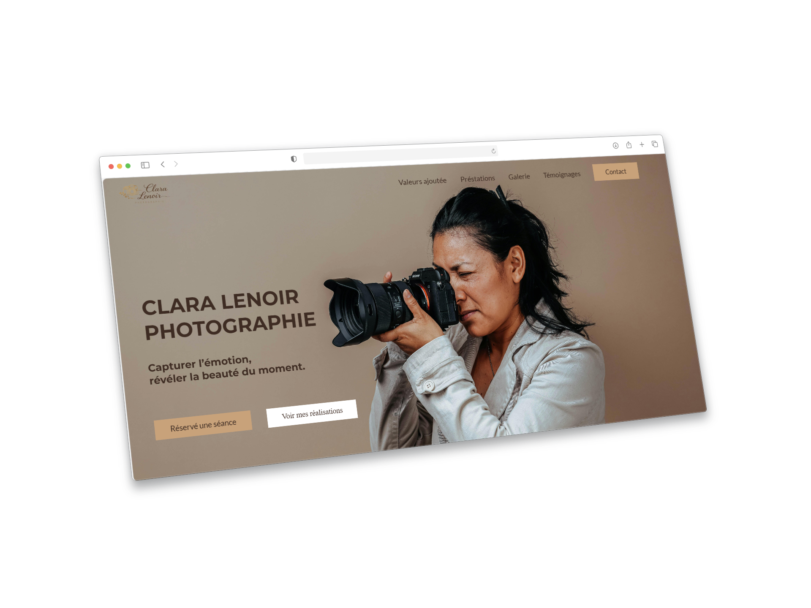
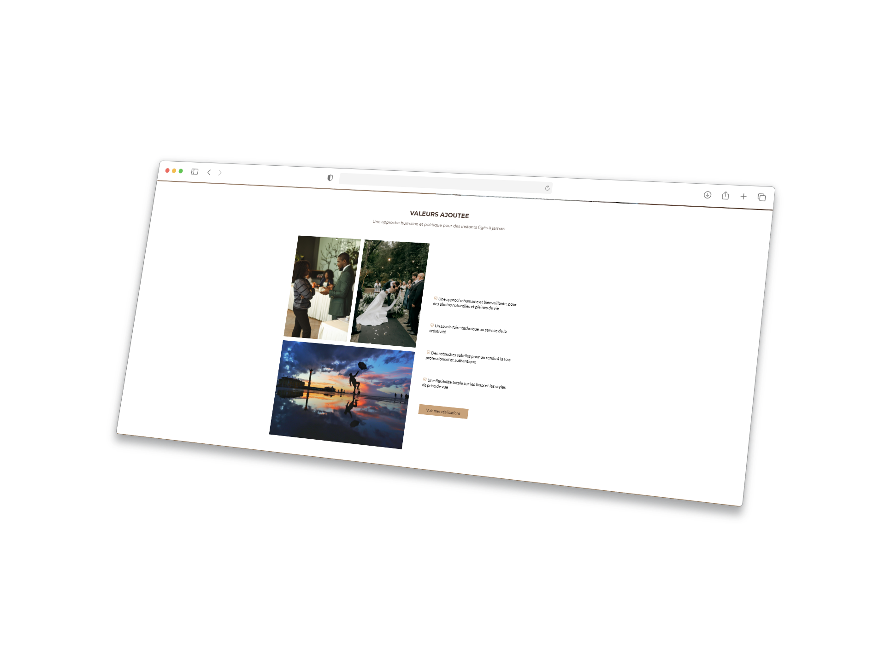
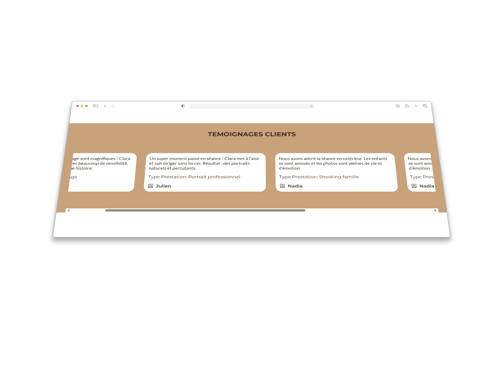

Antonin Da Silva
Projet réalisé durant la formation La Toile lors d'une évaluation sur l'ensemble des connaissances acquises en HTML/CSS.



L’objectif principal était de concevoir, grâce à une commande client fictive, de réaliser from scratch un site vitrine. Plusieurs sujet était présentés à nous et j'ai choisis la photographe, j'ai eu juste en lisant le sujet différentes idées qui me sont venu. Un cahier des charges m'a été fournis avec des éléments à intégrer obligatoirement comme les couleurs à utiliser, certaines photo, certains éléments de texte et les temoignages.